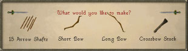
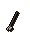
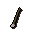
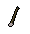

")
Fletching - Making Arrows
Starting Out

Arrow shafts are made from normal logs. When making arrows shafts, you can make 15 shafts per set of normal logs.
You can obtain arrow tips by Smithing them or by purchasing them from the following locations:
- The Ranging Guild
- Hickton’s Archery shop in Catherby
- King Lathas's Training area, south-east of the Tree Gnome Stronghold (you must complete the Biohazard Quest to enter).
- Player smiths
- Void Knights' Outpost Archery Store
You can obtain feathers either by killing chickens or buying them from:
- The Fishing Guild
- Shantay Pass in Al Kharid
- Fishing shops in Shilo Village and Port Sarim.
Finishing the Arrows
Once you have the arrow shafts, combine these with feathers to make headless arrows.
Arrow shaft |
+ | ![[image]](../../img/main/kbase/items/misc/feather.gif) Feather |
= | Headless arrow |
Then add arrow tips to the headless arrows to complete the arrow.
Headless arrow |
+ | ![[image]](../../img/main/kbase/weapons/ranged/iron_arrowheads.gif) Arrow tips |
= | Arrow |
The table below displays the Fletching experience gained for making arrow shafts and headless arrows. For carving the arrow shafts a player would get 0.33 experience points per shaft. Then, when feathers are attached to the shafts, the player would get an additional 1.0 experience point per shaft. Therefore, a completed headless arrow would have earned the player 1.33 Fletching experience points.
| Name | Amount made (per set of logs) |
Required Level | Experience Gained (per item) |
Arrow Shafts |
15 | 1 |
0.33 |
Headless Arrows |
15 | 1 |
1.0 |
Carving arrow shafts and adding feathers to them is a required stage for all arrows. The various types of arrow tips give players different experience points depending on the type of arrow being created with the tip.
The table of arrows below details the Fletching level required to make each type of arrow by attaching the corresponding arrow tips to headless arrows, and the amount of Fletching experience gained per item.
For example, a player attaching iron arrow tips to headless arrows would gain 2.5 Fletching experience points per iron arrow.
The entire process from start to finish would have earned the player 3.83 Fletching experience points per item - 1.33 (for making the headless arrow) + 2.50 (for attaching the iron arrow tip).
| Name | Amount made (per set of logs) |
Required Level | Experience Gained (per item) |
Bronze arrows |
15 | 1 |
1.3 |
Iron arrows |
15 | 15 |
2.5 |
Steel arrows |
15 | 30 |
5.0 |
Mithril arrows |
15 | 45 |
7.5 |
Adamant arrows |
15 | 60 |
10.0 |
Rune arrows |
15 | 75 |
12.5 |
Dragon arrows* |
15 | 90 |
15 |
Ogre Arrows

You will need these arrows if you wish to catch a chompy. The process is the same as for making normal arrows, but you will need different components.
- Cut achey trees for the shafts. Achey trees grow on the Feldip Hills.
- Use a knife on the achey logs to make ogre arrow shafts.
- Get wolf bones for the arrowheads by killing any kind of wolf.
- Use a chisel on the bones to get wolfbone arrow tips.
- Add feathers to make flighted ogre arrows. You will need four feathers per arrow.
- Add the wolfbone arrow tips to the flighted ogre arrows to make ogre arrows.
Brutal Arrows
You learn how to make these during the Zogre Flesh Eaters quest. You will not be able to make them until you learn how after a certain point in the quest. These arrows inflict more damage on big, undead monsters (such as Zogres) than regular arrows.
To make these arrows you will need to:
- Cut some achey tree logs. Achey trees grow on the Feldip Hills.
- Use a knife to fletch them into ogre arrow shafts.
- Use feathers on the arrow shafts to make flighted ogre arrows. You will use four feathers for each brutal arrow shaft.
- Smith some nails (read the Smithing guide for more information on smithing).
- Use the nails on flighted ogre arrows to make brutal arrows. You will use one nail to each brutal arrow. You will need a hammer in your inventory to force the nails into the flighted ogre arrows.
Below is a table of each type of item needed for making ogre and brutal arrows, the Fletching level required to make them and the amount of fletching experience you will gain for each individual item made.
| Name | Amount Made (per set of logs) |
Required Level | Experience Gained (per item) |
Ogre arrow shafts |
2 to 6 | 5 |
1.6 |
|  Flighted ogre arrows |
2 to 6 | 5 |
0.9 |
![[image]](../../img/main/kbase/weapons/ranged/wolfbone_tips.gif) Wolfbone tips |
2 to 6 | 5 |
2.5 |
The experience gained per item reflects how much experience you earn by completing an arrow from scratch. For carving the ogre arrow shafts and adding the feathers, you get 2.5 experience points - 1.6 (for making an ogre arrow shaft) + 0.9 (for attaching a feather ). This stage is the same for all the ogre and brutal arrows.
For example, a player attaching wolfbone tips to flighted ogre arrows would gain 1.0 Fletching experience points per item.
The entire process from start to finish would have earned the player 3.5 Fletching experience points per item - 2.5 (for making the flighted ogre arrow) + 1.0 (for attaching the wolfbone tip).
| Name | Amount Made (per set of logs) |
Required Level | Experience Gained (per item) |
Ogre arrows |
2 to 6 | 5 |
1.0 |
|  Bronze brutal arrows |
2 to 6 | 7 |
1.4 |
Iron brutal arrows |
2 to 6 | 18 |
2.6 |
Steel brutal arrows |
2 to 6 | 33 |
5.1 |
|  Black brutal arrows |
2 to 6 | 38 |
6.4 |
Mithril brutal arrows |
2 to 6 | 49 |
7.5 |
Adamant brutal arrows |
2 to 6 | 62 |
10.1 |
Rune brutal arrows |
2 to 6 | 77 |
12.5 |
Note: While making arrow tips for some arrows (i.e. ogre, brutal etc.) you gain experience points for other related skills.
For example, while making the wolfbone arrow tips, you gain Crafting experience as well as Fletching experience.
Please read the Crafting and Smithing sections of the manual for more details.
Click here to view the Fletching FAQs

More articles in
Fletching (Members Only)
|
|
|
Further Help
If this article does not help you, you may find the following sections of the RuneScape site helpful:
|
|